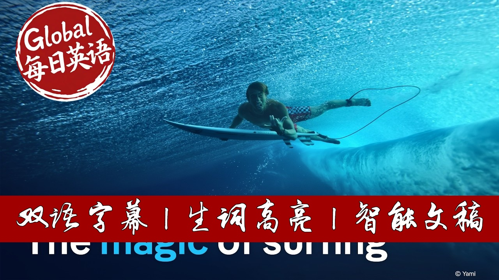

【科普精选：冲浪-浪花里的童话】
Summary: Surfing originated as a sacred Polynesian tradition nearly lost to colonial suppression. Its modern revival began through Hawaiian waterman Duke Kahanamoku’s Olympic fame and global ambassadorship. The 1950s California surf culture transformed it into a symbol of rebellion, later commercialized into a billion-dollar industry. Key revolutions included women’s competitive surfing led by Lisa Andersen, technical innovations like tow-in big wave riding, and the global spread of surf culture. Today, surfing balances professional competition with profound spiritual connections to the ocean, honoring its Polynesian roots while evolving into a worldwide phenomenon.
摘要： 冲浪起源于波利尼西亚的神圣传统，却因殖民压迫几近湮灭。现代冲浪复兴始于夏威夷"水人"杜克·卡哈纳莫库通过奥运荣耀成为全球推广大使。1950年代加州冲浪文化将其转化为反叛象征，后商业化成为数十亿美元产业。关键变革包括丽莎·安德森引领的女子竞技冲浪、拖曳冲浪等技术革新，以及冲浪文化的全球传播。如今，冲浪既保持着专业竞技发展，更延续着与海洋的精神联结，在致敬波利尼西亚根源的同时，已演变为席卷全球的文化浪潮。

⏱️ Estimated Reading Time: 59 min.
📚 四级生词 📚 六级生词 📚 雅思生词 📚 托福生词 📚 专八生词 📚 SAT生词 📚 考研生词 📚 GRE生词
Surfing is more than just a sport.
For Polynesians, it is a centuries-old tradition.
It is an expression of both culture and identity.
The art of surfing originated with the Polynesians.
But a hundred years ago, surfing had all but been forgotten.
Then, it gradually revived.
Thanks to the efforts of one Hawaiian man.
Thanks to a handful of young dropouts.
Thanks to businessmen and bold young women.
Today, millions of people surf all over the world.
They are part of a mythos.
It celebrates freedom, adventure and a connection with the elements.
This film tells the story of how that mythos was born.
And how it is kept alive today.
Welcome to Tahiti.
A surfer’s paradise.
With its Teahupo'o wave known as the world’s most beautiful.
This wave is legendary.
It’s like a wild animal.
A tiger.
The wave breaks on the reef.
Where the water is only one meter high.
Teahupo'o can be seriously scary.
The wave comes and the ocean suddenly hits you with full force.
It unleashes enormous power.
It’s a really scary wave.
You must show respect and humility.
Because you never know what might happen.
Vahine Fierro and Kauli Vaast are two of the best surfers in the world.
They were born in Polynesia.
They have been surfing the Teahupo’o wave since childhood.
Sometimes you have to wait a long time and be patient.
Everyone wants their wave.
There’s an order that you have to respect.
Suddenly a wave comes and you think: “This is the wave I've been waiting for!”
You have to paddle hard.
And then you see the sea receding.
You see the corals as if they’re waiting for you.
You feel like your center of gravity is shifting.
Like you're sliding sideways.
I descend and descend and think, “don’t fall!”.
When you’re inside the barrel, you’re back up.
And you’re completely surrounded by water.
The wave breaks.
And it’s as if time stands still.
Then suddenly you’re thrown out from behind.
That’s the best feeling.
When that happens, you know the wave was good.
You can only experience such powerful moments.
When you become one with the elements.
Teahupo’o is also very spiritual.
Surfing is closely linked to the lives and traditions of the Polynesians.
And to understand what surfing means to them.
You have to understand surfing’s beauty, depth and spirituality.
And its respect for the ocean.
I have learned from my family about traditional wood boards.
It’s bringing back the spirit of that tree in a different form.
Tom Pōhaku Stone preserves the culture of his ancestors.
Now over seventy years old, he is respected by surfers all over the world.
Everything that everyone surfs on today originates from the board.
That was designed by my Kupuna.
My ancestors.
And that was the foundation of it.
When we left the continent of Asia, southeast Asia, we gave up land.
Ocean becomes home.
Many believe that the Polynesians set off on huge pirogues from southern China.
Some 6,000 years ago.
They reached Indonesia and the Philippines.
At around the same time as the pharaohs were building the first pyramids in Egypt.
They landed on Tahiti around the time of the fall of the Roman Empire in Europe.
From there, over the following centuries, they made their way to Hawaii.
They made their way to Easter Island. And finally New Zealand.
Shipping was a cornerstone for the development of our society.
The sea is our origin. We are a people of Oceania. As it is called today.
We learned to conquer the sea before we mastered land.
We were constantly on the move. We had to discover land areas. Take possession of them and survive there.
Waves are part of the tides that cross the ocean.
In the Pacific, they travel thousands of kilometers. Shaped by the wind.
The ability to navigate the sea and its waves makes it possible.
To create connections between islands and entire continents.
We are one people. Connected by the sea.
Our migration took us to so many islands.
So many places throughout the ocean.
Surfing becomes an Extension of that migration.
I always saw it as an art form.
Understanding how the water moves.
It’s a very complex thing.
It’s a ballet.
I think that we tell our own story with our surfing style.
For example, I use it to express where I come from.
And who I am.
People often say that I dance too much on the wave.
That's part of our culture.
We are dancers too.
It's something personal.
Everyone has their own style.
Huge waves, gentle gliding.
The combination of opposites that characterizes surfing.
It is also expressed in the concept of Mana.
A sacred life force.
An energy that permeates all of existence.
Mana is a spiritual energy.
That is present throughout Polynesia.
We talk about possessing mana.
And passing it on.
This energy is also represented through traditional dances.
Expressing love, war, strength, courage, wisdom and sharing.
The arrival of the first Europeans in the eighteenth century was to have serious consequences.
For these ancient cultures.
In which surfing played a sacred role.
Whether Protestant, Catholic or Anglican.
Christian missionaries were tasked with converting the peoples of Oceania.
To European morals.
Among other things, that meant no more nudity.
And only one God.
The missionaries did frown upon doing things just for fun.
You should be more productive.
You should be growing things.
You should be learning things.
Not going out playing and surf.
So more and more people have jobs.
Going and working on sugar plantations.
They have to work if they are going to get paid.
They have to be there when they’re told to be there.
The Polynesians were quickly decimated by diseases.
Brought over from Europe.
In less than a century, the population of Tahiti fell from 100,000 to 6,000.
Western culture displaced the culture of the Oceanic peoples.
By the end of the 19th century, surfing had disappeared.
From almost all Polynesian islands.
So how did surfing become a worldwide phenomenon a century later?
A widespread leisure activity.
A lifestyle?
An elite sport.
With crowds of spectators.
Competitions and a lucrative business model?
How did the Polynesian tradition not only revive.
But thrive.
Spreading around the world?
The answer can be found on a stretch of beach in Waikīkī.
On the Hawaiian Islands.
Here stands the statue of the man.
Who is considered the founder of modern surfing.
Duke Kahanamoku.
Also known as The Duke.
Born in 1890, he grew up in Hawaii.
When the island state was still a kingdom.
And he was one of few people.
Who still mastered the art of traditional surfing.
Duke Kahanamoku was a water man.
He grew up at Waikiki.
From when he was a little child he was in the water at Waikiki.
Learning to paddle a canoe.
Learning to fish.
Learning to surf.
He loved Waikiki.
And he loved being on the ocean.
In 1906, when Thomas Edison came to Hawaii.
Which had been annexed by the United States just a few years earlier.
With one of the first film cameras.
Duke was 16 years old.
Edison discovered the legendary Waikiki beach.
And filmed young people surfing.
At the time, surfing was largely unknown.
The year 1911 marked a historic moment.
White Hawaiian settlers trained in private clubs.
They organized a swimming competition.
Duke became a US citizen through the “Hawaiian Organic Act” of 1900.
He defied the racist prejudices of the whites.
And took part.
To everyone's astonishment, he beat the world record.
In the 100-meter freestyle.
By more than four seconds.
Between 1912 and 1924, Duke Kahanamoku won a total of three Olympic gold medals.
And two silver medals in swimming.
He became an icon.
He traveled around the world.
And was celebrated in Australia, New Zealand and on the west coast of the United States.
He also became an advertising star.
Making surfing an attraction in his home country.
People were thrilled to meet him.
To be able to shake duke’s hand.
To be able to say, “I shook Duke Kahanamoku’s hand.”
Was something that people would brag about.
That’s when he is the ambassador.
That’s when he’s the guy who’s helping to spread surfing.
Thanks to Duke Kahanamoku, Hawaii attracted more and more tourists.
And Waikiki beach became the symbol of the revival of surfing.
But it was someone else.
Who helped popularize surfing outside of Hawaii.
And throughout the United States.
Tom Blake grew up in the Midwest of the United States.
In the 1920s.
Pretty far from the ocean and any surfing opportunities.
Tom Blake was an orphan.
Bounced around throughout his childhood.
And he meets Duke Kahanamoku in a movie theater in Detroit, Michigan.
Duke comes over and shakes his hand.
Blake was fascinated by Duke Kahanamoku.
And soon moved to Hawaii.
To immerse himself in Polynesian culture.
He goes to Waikiki.
And there Duke takes Tom Blake under his wing.
And then Tom Blake idolizes Duke.
Tom Blake also learned everything he could.
About the Polynesian surfing tradition.
He then began to redesign the surfboard.
He hollowed it out to make it lighter.
And gave it a different shape and size.
After intensive research and experimentation.
He came up with the idea of attaching a fin.
To the back of the board.
In the mid-1930s.
An innovation that greatly improved the surfboard’s maneuverability.
In 1935, Tom Blake wrote one of the most important books.
In the history of surfing.
“Hawaiian Surfboard.”
While on a board, either surfing or paddling.
One is truly free from land-bound restrictions.
For that hour he is the captain of his fate.
Of his miniature ship.
The burden of city, school, job.
As well as the cares and worries of the subconscious mind.
Are erased and forgotten.
Until the tensions of living again build up.
The remedy again is obvious.
Go surfing.
The Duke's teachings were now available to all.
Duke Kahanamoku and Tom Blake had carried the sacred fire into the world.
In the early 1950s, surfing fever was raging.
Along the California coast.
The ancient Polynesian sport was attracting hundreds of young people.
Who had radically broken with the American way of life.
Enthusiastic surfers formed communities.
Along the beaches of California's most beautiful towns.
Windansea, Swami's, Trestles.
And the beach widely regarded as the jewel of the West coast.
Malibu.
There was one area where you walked down a hill to get to the beach.
And in that area they called it the pit.
There was nobody to tell you what to do.
Surfing wasn’t in the mainstream at all.
It was just like tribes.
All they lived for was surfing.
It was their way of expressing.
That was the lifestyle.
It was just the strangest craziest group of people.
They didn’t work.
That was the joke.
How did they make any money?
Nobody knows.
They survived.
One of these freedom-loving surfers was penniless and proud.
Miki Dora.
Miki Dora's influence can be summarized in one word.
Lifestyle.
On the beach in Malibu, he invented the beach bum lifestyle.
For social misfits and hedonists.
An image that stuck.
For decades of surfers.
In one of Miki Dora's rare audio recordings, he tells his story.
My whole life is this escape.
My whole life is this wave.
I drop into, set the whole thing up.
Pull up the bottom.
Pull up into it and shoot into my life.
Going for broke, man.
And behind me, all the shit goes over my back.
The screaming parents.
Screaming teachers.
Police.
Priests.
Politicians.
Kneeboarders. Windsurfers. They’re all going over the falls.
Headfirst into the reef.
Miki was a rogue.
His reputation was kind of like a rogue.
He was kind of like anti-establishment.
Kind of anti-everything, you know?
But he was kind of cool.
He’d do things like you’d be out in the water.
After you get to know him a little bit.
And go, Go, go man.
And then he’s take up behind you.
And he’s just push you off.
Man, they called him the Cat.
All the kids at the beach.
He was like a cat.
Increasingly, the Polynesian tradition faded into the background.
Alongside others, Miki Dora opted for innovative boards.
Made of polyurethane foam blocks.
Instead of the traditional wooden ones.
Weighing only a few kilos.
These synthetic boards made gliding easier.
Faster and more acrobatic.
Everyone wanted to copy Miki Dora!
The board that bore his name became a worldwide bestseller.
By the 1950s, surfing had become a symbol of youthful emancipation.
Along with Marlon Brando's motorcycle.
And James Dean's car.
There was now Elvis Presley's Hawaiian shirt.
And Gidget's surfboard.
All I wanted to do is surf.
That’s all.
Surfing was no longer a sport for rebels.
Thanks to Hollywood.
It had become synonymous with beach holidays and sunset romance.
This was also the birth of surfing as a popular sport.
In the late 1950s, it spread throughout Europe.
Where it took hold of the next generation.
And the next.
When I was nine years old.
I was on a family vacation in Brittany.
And I saw a little bodyboard that I really wanted.
And my mother bought it for me.
And then I surfed on this bodyboard.
I think for ten days or so.
Until my whole stomach was scraped open.
And I came home with blue lips every day.
I started surfing when I was ten or eleven years old.
On weekends and during vacations.
It was like a bubble where I had all the freedom.
I had fun.
I was in the sea.
Totally in love with the salty water.
The waves...
I would never want to separate surfing from these moments.
Of joy, relaxation, total freedom and sharing.
That's surfing for me.
By the mid-1960s, the surfing community had grown.
From a few hundred dropouts to millions of enthusiasts.
The counterculture, with its freedom-loving rites.
Was swamped by a mass of vacationers and casual surfers.
It was too much for the “real” surfers.
There was only one solution.
To get out!
Three Californians set off with their cameras.
In search of a new paradise.
With unexplored beaches and waves.
In the southern hemisphere.
Their film, The Endless Summer, documents a surfing trip around the world.
It was a cold, foggy winter morning in November.
When Mike and Robert were ready to depart.
On the first leg of their endless summer journey.
You can’t tell how good a wave is.
Until you actually ride it.
On Mike’s first ride, the first five seconds.
He knew he’d finally found that perfect wave.
The film popularized the myth of the nomad surfer.
Travelling around the world with a mattress in the back of a minibus.
And boards on the roof.
Surfing waves on lonely beaches.
At the mercy of the seasons, winds and tides.
The surfing trip followed the hippie wave around the globe.
Kuta Beach in Bali became to surfers.
What Kathmandu in Nepal had been for backpackers.
Mike Hynson was one of the protagonists of The Endless Summer.
For him, this way of life went hand-in-hand with mind-expanding substances.
A lot of pot-smoking.
LSD.
We wanted to turn everybody on the world with the LSD.
The good old days.
During those days there was a lot you'd get away with you know.
It created a lifestyle you know.
Of not working.
And being self employed.
I’ve been in and out of county jail.
I never got in trouble for anything big.
It was just part of the lifestyle.
But for countless others.
Nothing matches the adrenaline rush of surfing a huge wave.
After all, if you're going to flirt with death.
You might as well have fun doing it.
The North Shore of the Hawaiian island of Oahu.
Is known for its special weather conditions.
From October to March, storms move across the Pacific towards Alaska.
They create huge waves on the open sea.
A group of surfers invented big wave surfing here.
Among them is one of the most daring surfers in California.
Greg Noll.
Duke it’s a real honour to be here on your island.
For this Invitational Surfing Championship.
I’m glad you came to Hawaii.
With the support of the legendary Duke Kahanamoku.
The North Shore became the new stronghold of U.S. surfers.
And the site of the first major competition in Duke's honor.
Big wave surfing presented surfers with very special challenges.
I become a hunter when I'm in the line up.
And I wait for the set.
I see the waves coming.
Then I become a hunter for a brief moment.
Because I'm chasing the wave I want.
You need perfect technique.
It looks easy from the outside.
Like a picture postcard.
But when you're surfing, you have to move like a cat.
It’s very precise.
I love that.
The slightest mistake and the wave will hit you relentlessly.
When I saw how high the wave was...
A mountain of black water was coming towards me.
I’d never seen such a big wave in my life.
I was in the right place at the right time.
That was my moment.
I didn't hesitate.
And I thought: "That's why you're here, just do it."
Don't think about the risk of dying.
You just have to go for it.
When you fall, the first thing to consider is the impact.
Hitting water at 80 kilometers per hour is hard.
The wave has a circular motion.
Which means you are repeatedly sucked up.
Thrown down.
Sucked up.
Thrown down.
It can cause your eardrum to burst.
After the first wave, I was out of breath.
Then a second wave broke over my head.
And I didn't have time to catch my breath.
When I came back up, there were three more waves.
So I had to go under again.
When I fell, I thought: that's it.
Thanks, let's see what happens next.
But I was unhurt and everything went well.
You never know that you won't be swallowed up by the wave.
You have to trust the ocean.
Sometimes it shakes you up.
Sometimes I misjudge the situation.
And then I have to reflect on it.
In the hospital!
In the late 1960s, the surf revolution continued.
On the other side of the Pacific.
In Australia.
In this run-down garage.
A new chapter of surfing history was being written.
As a group of young surfers worked on wetsuits.
They founded a clothing brand.
That specialized in cold-water surfing.
Rip Curl.
On the other side of the street, meanwhile, a brand that made surf shorts was founded: Quiksilver.
The Australians revolutionized the way people surfed.
They came up with the idea of using smaller boards.
The shortboard was much more maneuverable than the larger boards and allowed for higher speeds along the waves.
It wasn't long before more and more Australian surfers took to the beaches of Hawaii.
Their take-over began on Hawaii’s North Shore.
During the early 1970s, a whole new generation of Australians decided they wanted to make their mark here on the North Shores.
They were young, they were brash, they were aggressive, they were arrogant.
And they wanted to break down the door that the Hawaiians had been dominant here on the North Shore,
and they wanted to prove that they could do better.
All of a sudden, all of these agro crazy Australians show up and have no respect for the local environment in the lineup.
And they’re just like, they’re like rats.
And they’re going shshshs. They’re taking everything with no respect.
And they create this atmosphere, environment in the water that takes away the sharing.
And the Hawaiians said screw you guys,
this is our home our surf you’re coming here you're disrespecting us by this attitude?
And as native peoples, we’re not going to tolerate that.
We’re going to retaliate against that.
We’re going to hammer you.
We’re going to put you on the plane and send you home. Don’t come back.
The uprising in Hawaii became a rallying cry.
Local surfers, known as Black Shorts, defended their waves with their fists.
They were part of a much larger movement that spread throughout Polynesia.
It pushed back against the rise of mass tourism –
and its accompanying invasion of developers and investors who were destroying the ecosystem.
In the mid-1970s, a team of researchers made headlines by studying the history of the Oceanic peoples,
and their traditional navigation techniques.
They wanted to prove that the Polynesians were indeed one people.
By recreating a migration journey that had previously been considered impossible,
they were able to connect Hawaii with Tahiti.
Using centuries-old technology, they built a traditional pirogue
that could transport around 15 people, livestock and seeds.
In 1976, the Hōkūleʻa left Hawaii and set sail for Tahiti.
After 34 days at sea, the crew of the Hōkūleʻa sighted the coast of Tahiti.
I was there. There was a huge crowd, who wanted to see the arrival of the Hōkūleʻa.
It was joy. It was an indescribable feeling.
Hōkūleʻa was a good thing for all Pacific peoples to happen.
In the late 1970s and early 1980s,
the indigenous inhabitants of French Polynesia increasingly returned to their cultural origins
and to their original name: the Maohi.
Surfing also regained cultural relevance.
Surfing was that foundation to move us as a cultural living people. To stay alive.
Surfing brought people together.
And by the 1980s, it had become clear that there was also money to be made. Lots of money.
The commercialization of surfer fashion made it possible to look like a surfer without being one.
The industry now turned over several billion dollars a year.
Surfing became more and more professionalized.
Many surfers were sponsored by brands, and were finally able to support themselves through their passion.
Hello everybody and welcome back to Huntington Beach for the OP pro.
So when we started the Pro Tour in the mid-Seventies
we were giving out prize money of maybe five thousand dollars which was good, you know, nothing wrong with that.
But it wasn’t really that much.
We would be able to start handing out hundreds of thousands of dollars.
Feels pretty good huh? It’s so unreal!
And we saw the spark in surfers’ eye and said hey,
I can be a pro Surfer and make a living out of just going surfing.
And that was the goal.
Professional surfing legitimised surfing it changed from this Bach bum attitude
that people had about surfers to professional athletes - are professional surfers.
The crowd is going wild, guys.
He’s zigzagged his way into...
But commercialization also had its downsides.
The sport’s sexualization was part of the marketing strategy.
At big events, bikini competitions took place between rounds of surfing.
Female surfers were relegated to filling in during breaks - between popcorn and jet ski jumps.
The women were always allowed out when there were no or fewer waves or the wind had shifted.
They could not present themselves properly and consequently there were no spectators.
The men had priority.
It was like that for many years at competitions.
In the late 1980s, some female surfers decided they’d had enough.
They had no sponsors - and therefore no money for equipment, not to mention earnings.
But together, they launched an attack on the male-dominated surfing world.
If you look at the first generations who took part in competitions, they didn't really have a say.
They had to make themselves heard and say: “We're not men, we're women, and we surf too”.
Among them was Lisa Andersen, who became an icon for an entire generation.
Lisa was the embodiment of women’s surfing.
She was a rebel, a little hardcore and wild.
She wasn't afraid of anything, as she’d had a difficult childhood.
In the early 1990s, Lisa was unstoppable.
She brought women's surfing more credibility.
The sponsors were wild for her.
Lisa Andersen was in high demand.
Lisa for sure was the best surfer of her time in her deal.
And she got into the design department with Quiksilver, and she started going:
I don’t want to surf in a bikini, I want girl shorts that I can surf in,
has good attachment and solid but still looks good on a girl.
So she got into the design department and started making surfing shorts for women.
We brought out board shorts for women.
They were a great success.
So we knew we were onto something.
The first line of women's gear was nearly ready when the Australian boss of Quiksilver insisted on launching the collection under a different brand - named after his daughter, Roxy.
It was all the same to Lisa Andersen: She was determined to make the brand a success, no matter what.
In 1995, Lisa was featured on the cover of “Surfer”.
This made her the first woman ever to appear on the cover of a surfing magazine.
It said: Lisa can surf better than you, which meant that Lisa could surf better than any boy.
That was great, very radical, and absolutely right.
Everyone applauded because it was a real change.
Around the same time, there was another revolution in surfing.
A stylistic revolution characterized by a seemingly endless succession of tricks
and rapid turns as well as by tremendous technical precision.
This revolution did not originate in Waikiki or Malibu, but in a US suburb in the early 90s.
This video has been seen countless times and is cult among surfers.
Let’s go video some surf.
The “momentum” generation, as they were soon called, approached surfing in a completely new way.
Their goal was to stay on the wave as long as possible in order to perform as many tricks as possible.
Surfing legend Kelly Slater was among them.
They grow up in little tiny waves in Cocoa Beach in Florida.
A lot of good surfers have come up in really bad conditions.
And I think what it does, it makes your reflexes so sharp and quick,
that when you get into a wave with more face like Hawaii, it’s easy, because you have time.
I think about it all the time.
Surfing occupies one-hundred percent of my time –
when I’m eating I’m thinking about surfing,
when I’m sleeping I’m dreaming about it
and that’s the way it’s gotta be,
you gotta be totally dedicated and your whole life has to revolve around it if you wanna be real serious.
A big part of doing different maneuvers is visualizing when you’re watching a wave,
just imagine what you could do on the wave.
His maturity, and his lines and the way he approached the wave
and his carvings his technical ability was really sophisticated.
Challenging conventions, with new tricks.
These tricks were made possible by a new development in surfboard design: three fins on the tail.
Finally, the scoring system for competitions was modernized.
The jury now evaluated the performance of surfers who dueled it out on the same waves in a new way.
Flow of the ride, variety of maneuvers, degree of difficulty, quality of the wave...
a scoring system was developed, similar to that used in figure skating.
Kelly Slater was unbeatable in those years.
He won the world championships five times in a row in nineteen-ninety four, ninety-five, ninety-six, ninety-seven and ninety-eight.
Kelly is a legend.
There is no one like him.
He is simply the boss.
Now over fifty, Kelly Slater has eleven world championship titles to his name.
He still competes with the best surfers in the world in selected competitions.
There’ll never be another one like Kelly.
Professional surfing has established itself, and surfing as a popular sport has conquered the world.
But some purists prefer to stay away from competition.
Laird Hamilton has taken it upon himself to revive the spirit of big wave surfing.
I just looked at the landscape, and I thought ok,
here’s the ocean here’s surfing I’ve seen every kind of different surfing there is,
I watched surfing develop with the equipment, I watched the places develop.
What am I interested in, what is the thing that interests me?
And the thing that made sense to me was just, do what no one else can do.
Laird Hamilton grew up on the North Shore, among the huge waves of Waimea Bay.
Laird was a great athlete.
He wanted to surf huge waves.
He had seen his father and his friends do it, but at some point you reach your physical limit.
The higher the swell, the faster you have to paddle.
And human strength is limited.
He realized that he needed propulsion.
He and his buddy Buzzy Kerbox bought a Zodiac boat.
This allowed them to go faster than the waves.
That’s how tow-in surfing was born.
One morning in February 1993, photographer Sylvain Cazenave documented the new surfing technique from the air, off Hawaii.
The dinghy was three kilometers away from the main boat.
And then we saw a gigantic swell coming up.
Through trial and error, the new method took several months to perfect.
An inflatable boat pulled Laird Hamilton to the top of the huge wave.
Once at the edge of the break, Hamilton released the rope connecting him to the boat and plunged into the unknown.
Being towed onto a wave and then letting go,
and feeling the wave pick you up and as soon as it picked you up, you were flying.
You had that feeling you were set free.
It freed me from the chains of surfing.
And so when you have this evolution that all of a sudden opens up the potential for new breaks,
then it just makes the whole world a bigger world.
Following the example of Laird Hamilton, tow-in surfers follow storms and waves all over the world.
More than ever, it's the elements that call the shots
and set the pace in the lives of this new breed of surfers.
Justine Dupont was a longboard world champion who decided to devote herself entirely to big wave surfing.
Since then, her life has been dictated by the weather.
She is one of the few female wave chasers.
You know you're going after a wave that you might never be able to surf again.
You think: this is a once-in-a-lifetime thing.
A unique day in your life.
That's the special thing about big wave surfing that I love so much: the search.
Around 2010, a new wave appeared on the big wave surfers' map – the Nazaré wave in Portugal.
On stormy days, it can reach a height of up to 30 meters.
At the bottom of the ocean, the Nazaré Gorge stretches for hundreds of kilometers
and drops almost 5,000 meters into the depths.
This geological feature can generate huge waves that crash onto the coast with a deafening noise.
Spectators stand high up, as if in an arena, and wait.
Those who face the Nazaré wave are prepared for the worst.
Every big wave surfer must have a team of helpers with them,
because a wrong move can be fatal.
There are many casualties.
On the day when the big waves arrive, I usually wake up at four am.
The whole team is there by five.
We get ready: radios are handed out.
The site plan is drawn up.
We go through all the positions again.
I get the team very close together, everyone swears once again that we are there for each other.
Sebastian Steudtner holds the world record for the highest wave ever surfed.
At more than 26 meters, it was as high as a ten-story building.
I like to get out on the water a bit before sunrise.
It's still very dark and then you can only see the silhouettes of the waves coming in.
And the further out they are, the bigger the waves are.
I can roughly judge the power of the wave by its color.
The darker the wave is, the more powerful it is.
Everything that happens after that is intuitive.
That's one of the best moments for me: I position myself on the wave,
which means I have an overview of the wave.
The view and the feeling, the speed...you can't describe it.
It's just you and the wave.
You let go of the rope and all your senses light up, come alive.
You feel the wave rising behind you, you can feel it.
You also see the shadow coming.
You say to yourself: this is it.
With the world record wave I understood we’ve come to the end of the line with our development and our knowledge of what’s possible
like board design and construction.
Like Tom Blake and Laird Hamilton before him, Sebastian Steudtner is looking for ways to improve his equipment.
Here he uses a wind tunnel to increase his speed.
And this is Kelly Slater, who has created an artificial wave park
so that he can surf endlessly on perfect waves.
But one crucial element remains the same.
Celebrating the sea, as the inhabitants of Oceania did long ago.
Plunging into the ocean waves to test human bravery, and fragility, in the face of the elements.
Today, millions of people around the world love to surf.
They are keeping the sacred spirit of surfing alive.
And I hope that the younger generations don’t forget to dance.
The Hula, the ballet, whatever it is.
It’s the grace.
Don’t ever forget that dance.
And always smile.
It’s a happy thing.